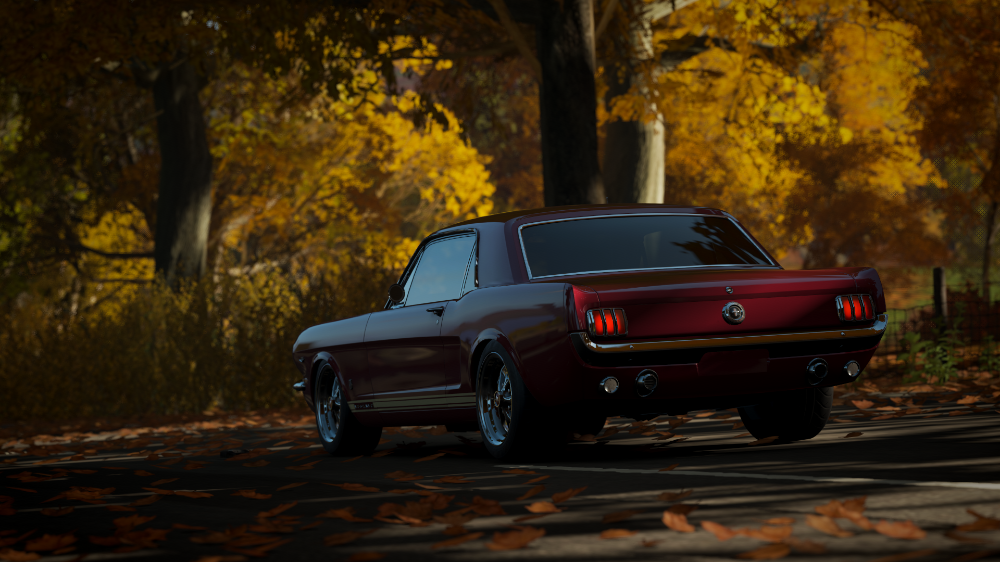
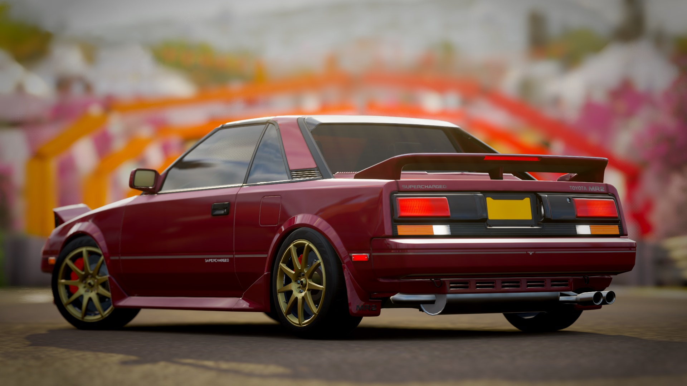
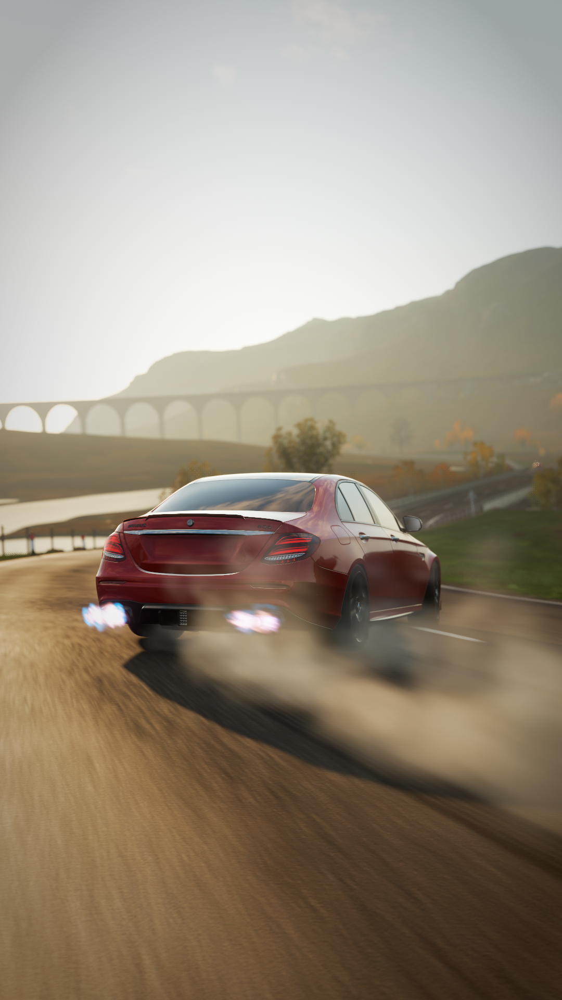
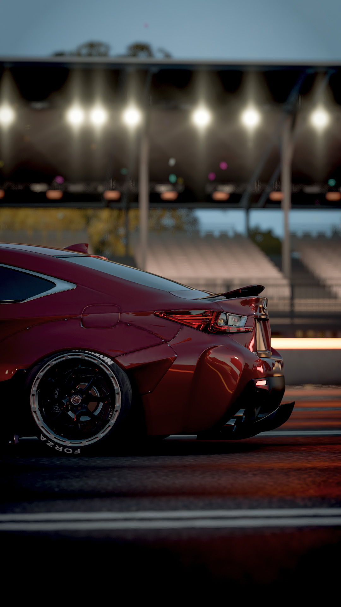
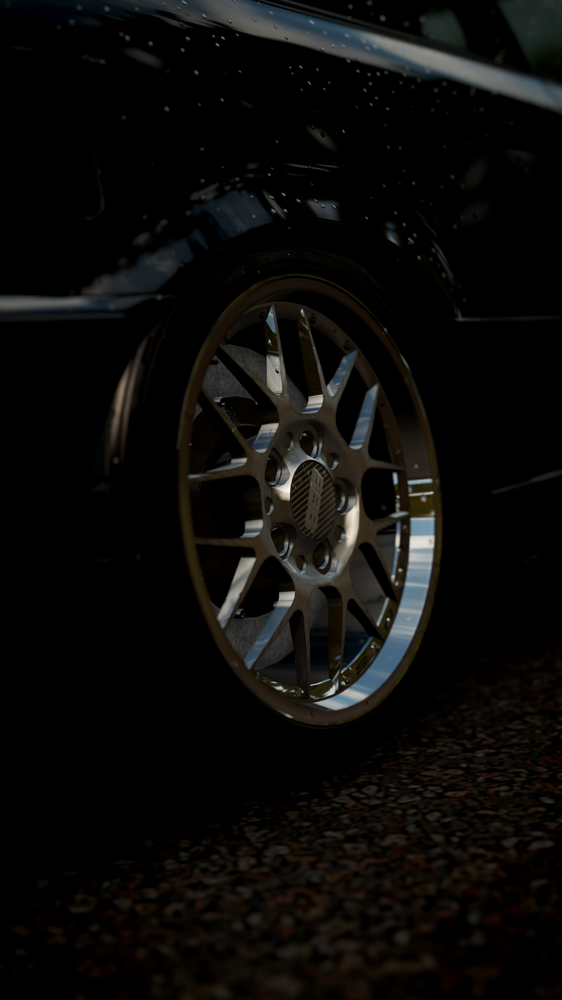
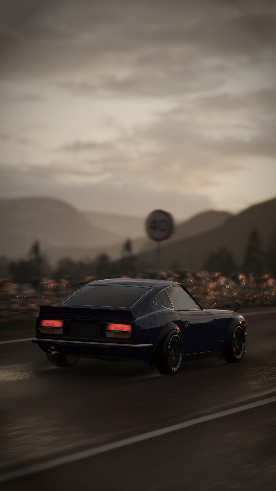
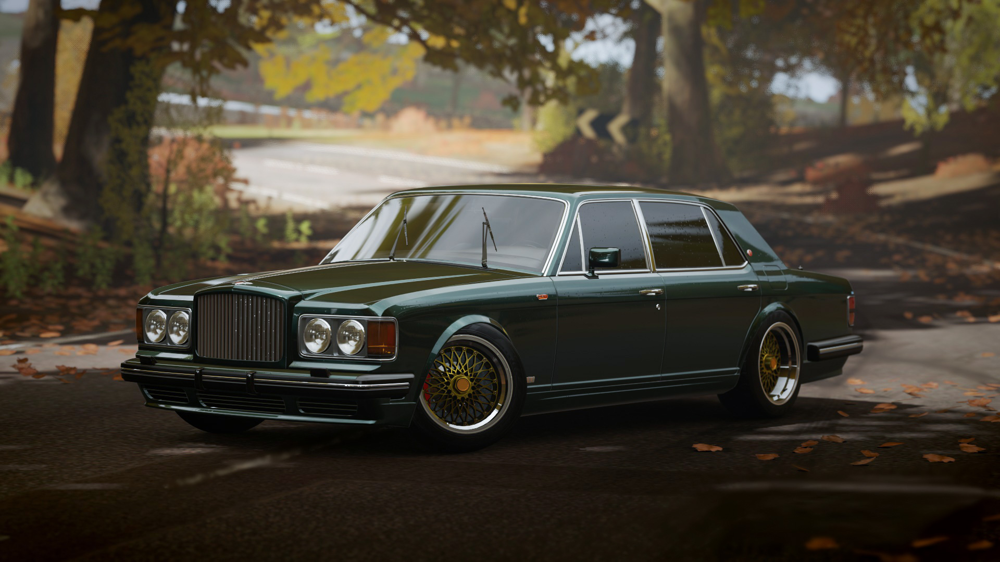
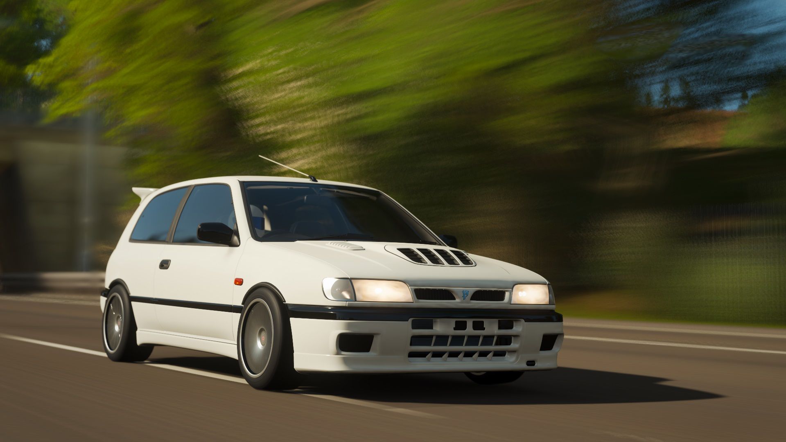

Kedvenc témám a fényképezésnél a járművek. Általában rendezvényeken szoktam hobbi szinten fotózni, de a járványhelyzet alatt ezek hiánya miatt csak számítógépes játékokban tudtam. Főleg a Forza Horizon 4-ben, a GTA 5-ben és a The Crew 2-ban gyakoroltam ezt a művészetet.
Forza Horizon 4 képek
|  |  | ||
|  |  |  |  |
|  |  | ||
IRL fotók

|

|

|

|
Editelés
Az eredeti képeket néha editelni/szerkeszteni is szoktam. Leggyakrabban a hátteren, a színvilágon módosítok, a rendszámtáblákat kivágom vagy a kisebb hibákat szerkesztem ki a képekből.